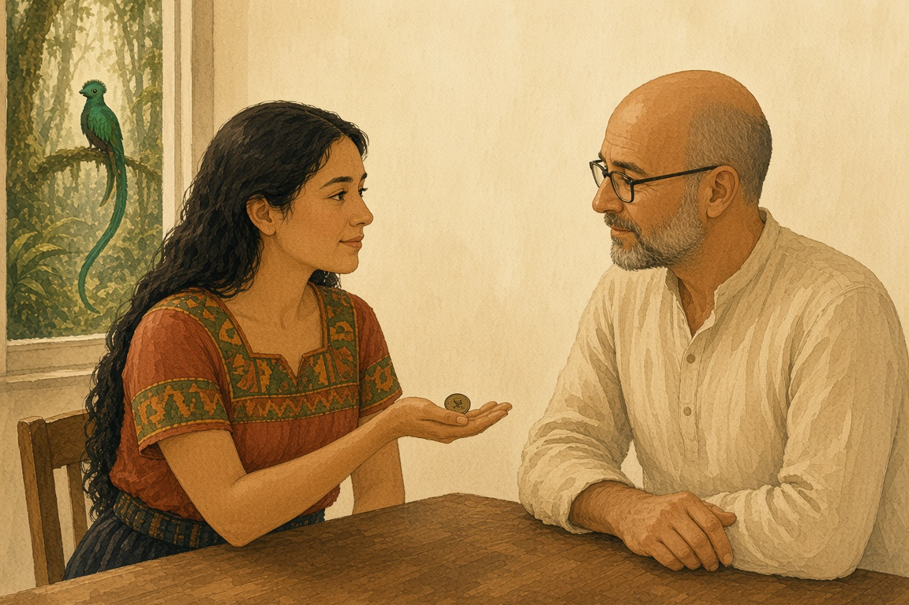

- B2
- Animales y símbolos
El cóndor y el quetzal
Un pájaro en el escudo no es eterno: el nombre queda; el animal, a veces, no.
Texto
No vi un cóndor el primer día en los Andes. Vi, primero, su imagen: en una plaza de Quito, en un escudo, con las alas abiertas sobre un paisaje que yo todavía no entendía. «Es más que un pájaro», me dijo un guía. El cóndor andino —un animal de hasta unos 3,2 metros de envergadura, más o menos el doble de la estatura de una persona— aparece en los símbolos de varios países: Ecuador, Colombia, Bolivia y Chile. Vuela alto, aprovecha el viento y, de lejos, parece una sombra lenta sobre las montañas.
Días después, en un mirador, sí lo vi. No fue un momento de película. Fue un instante breve: un cuerpo negro, el cuello blanco, las alas inmensas. Un silencio raro se hizo en el grupo. Pensé en lo fácil que es convertir un animal en un adorno y lo difícil que es dejarlo vivir. Hoy el cóndor andino está en una situación vulnerable; no es un dibujo eterno en una bandera. El guía, en voz baja, dijo que cada avistamiento es también una pregunta: ¿va a haber cóndores para los que vienen detrás de nosotros?
Más tarde, en una conversación con Irene, que es de Guatemala, la historia cambió de color. «Nosotros tenemos el quetzal», dijo. El quetzal es un ave de bosque, de un verde intenso, con una cola larguísima en el macho. Es el ave nacional de Guatemala, y la moneda del país también se llama quetzal. En la cultura maya, sus plumas eran un tesoro. Irene abrió la cartera y me mostró una moneda: el pájaro cabía, diminuto, en la palma. Me explicó que el nombre de la moneda viene de esa ave, tan presente en la idea de Guatemala como el cóndor en los Andes. Sonrió: «Un país puede caber en un pájaro, para bien y para mal. El nombre queda. El animal, a veces, no».

Me gustó esa frase, y también la comparación. El cóndor es de cumbres abiertas; el quetzal, de sombra húmeda y árboles. Uno parece fuerza y distancia. El otro, un lujo silencioso. Los dos son más que fauna: son una manera de decir «nosotros». Por eso esta lectura no es una ficha de biología. Es una pregunta que me traje de vuelta: cuando un animal entra en una bandera, ¿lo cuidamos más o lo damos por seguro? Conviene que lo protejamos de verdad, no solo en el escudo.